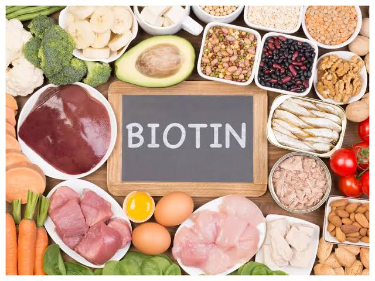
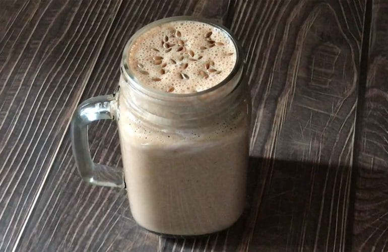

VITAMIN B7 (Biotin)
INTRODUCTION
Vitamin H, more commonly known as biotin, is part of the B complex group of vitamins. All B vitamins help the body to convert food (carbohydrates) into fuel (glucose), which is used to produce energy. These B vitamins, often referred to as B complex vitamins, also help the body metabolize fats and protein.
FUNCTIONS OF BIOTIN
- Strengthen hair and nails
- Maintains skin health
- Assist in weight loss
- Lower cholesterol
- Regulates blood sugar
SOURCES OF BIOTIN
- Peanuts
- Oats
- Hazelnuts
- Egg yolks
- Walnuts
- Lentils
- Carrot

DEFICIENCY OF VITAMIN B7
- Hair and nail problems: hair loss and thinning, weak and brittle nails
- Cradle Cap (Seborrheic Dermatitis): development of scaly scalp condition
- Neurological disorders
- Delayed growth and development
- Depression and lethargy
- Lack of coordination
- Thinning and numbness in extremities
RECIPES
Biotin Smoothie
Ingredients
- 4 tbsp oats
- ½ tbsp flax seeds
- 1 tsp pumpkin seeds
- 1 tsp sunflower seeds
- 3 small dates
- 1 cup milk
- ½ banana
- 6 soaked almonds
- 6 soaked hazelnuts
- 6 soaked walnuts
- 1 tbsp peanut butter
Directions
- Take a bowl; add oats, dates, flax seeds, pumpkin seeds, sunflower seeds, cocoa powder, and some water.
- Mix them well.
- Keep them soaked for a minimum of 2-3 hours or overnight.
- In a blender jar, add the soaked oats and seeds mixture, small pieces of banana, soaked peeled almonds, and peanut butter.
- Blend all the ingredients.
- Now add milk to the blender and blend again.
- Your “Biotin Rich Smoothie” is ready!
- You can top it off with some seeds of your choice.
